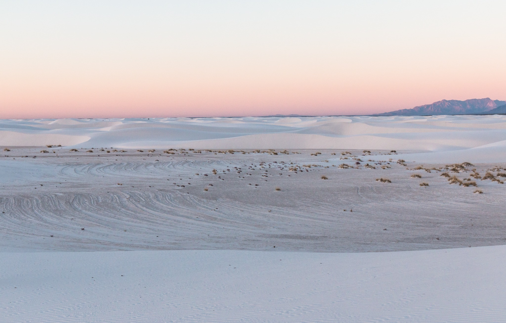
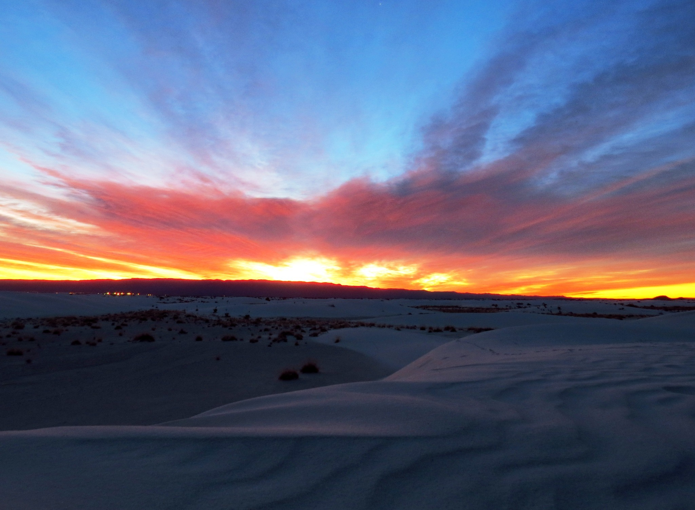
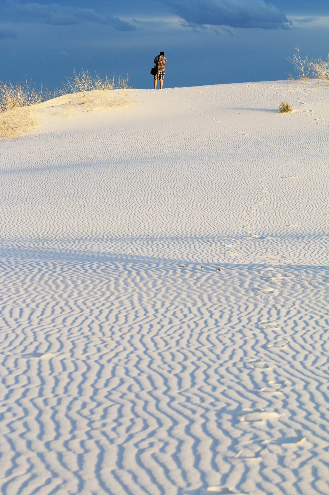

WHITE SANDS
A landscape of gypsum, continually rearranged by the wind.
BROOKE HOWARD / 01 · SUPPLIED RESEARCHSwipe to explore. One observation at a time.

A landscape of gypsum, continually rearranged by the wind.
BROOKE HOWARD / 01 · SUPPLIED RESEARCH
Wind moves pale grains into ridges and slopes. Light makes the small contours visible.
BROOKE HOWARD / 02 · SUPPLIED RESEARCH
Across the dunes, changing light alters the apparent depth and scale.
BROOKE HOWARD / 03 · SUPPLIED RESEARCHHuman footprints survive in sediments associated with ancient Lake Otero. The supplied research dates some tracks to approximately 21,000–23,000 years ago.
BROOKE HOWARD / 04 · SUPPLIED RESEARCHWhite Sands National Park and White Sands Missile Range are distinct places. Trinity Site lies within today’s missile range.
BROOKE HOWARD / 05 · SUPPLIED RESEARCH
Study large silhouettes, restricted color and a clear type hierarchy. Identify contemporary concepts separately from historical WPA records.
BROOKE HOWARD / 06 · POSTER STUDY
Walk, notice the changing surface, and check official NPS access and preparation guidance before visiting.
BROOKE HOWARD / 07 · SUPPLIED RESEARCH